About Me
Hey! My name is Bryce. I'm currently a computer science undergraduate student at CU Boulder with an anticipated graduation date of spring 2024. My interests are in software development and machine learning, but I generally love anything to do with the field of computing. Outside of school, I'm involved in undergraduate research in the TMI Lab at CU, I help develop software for nonprofit organizations with the Blueprint Boulder Club, I'm the co-founder of the CU Quantum Computing Club, and I love solving puzzles and learning new things.
Projects
Bipolar Disorder Tracking App
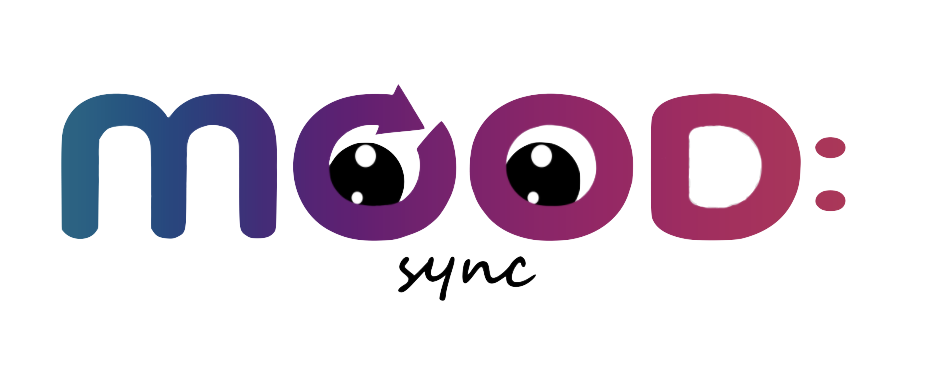Since January, 2021 I have been involved in undergraduate research in the CU TMI Lab under Dr. Stephen Voida. My main project with this lab was to create a full-stack web application, designed to facilitate the process of patients understanding and managing their bipolar disorder. The application is currently being tested by its first group of patients with BD! You can download a short research paper I co-authored as a part of this project here.

 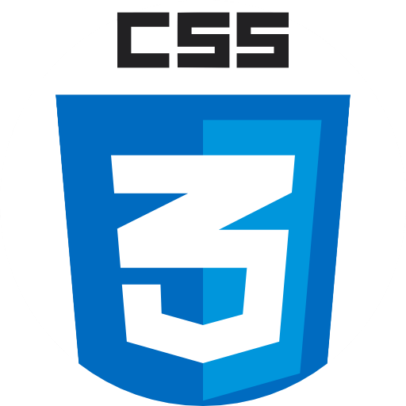
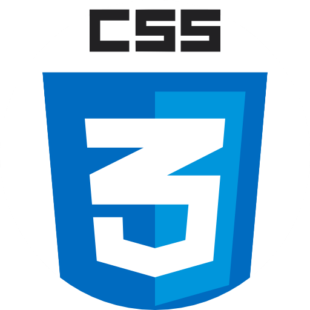

 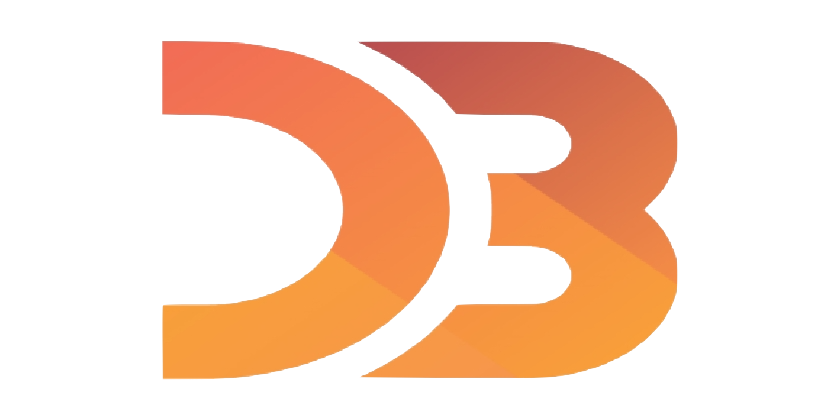
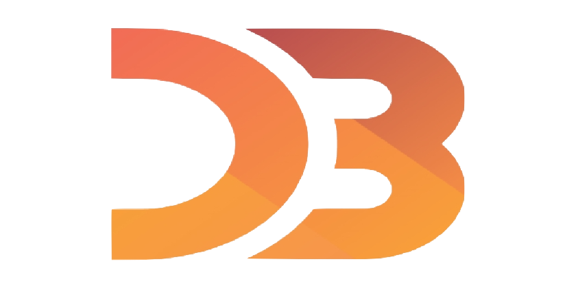
Technologies used: React.js, HTML, CSS, JavaScript, AWS (DynamoDB, Cognito, lambda functions), D3.js, Firebase
Bad Cryptocurrency Bot
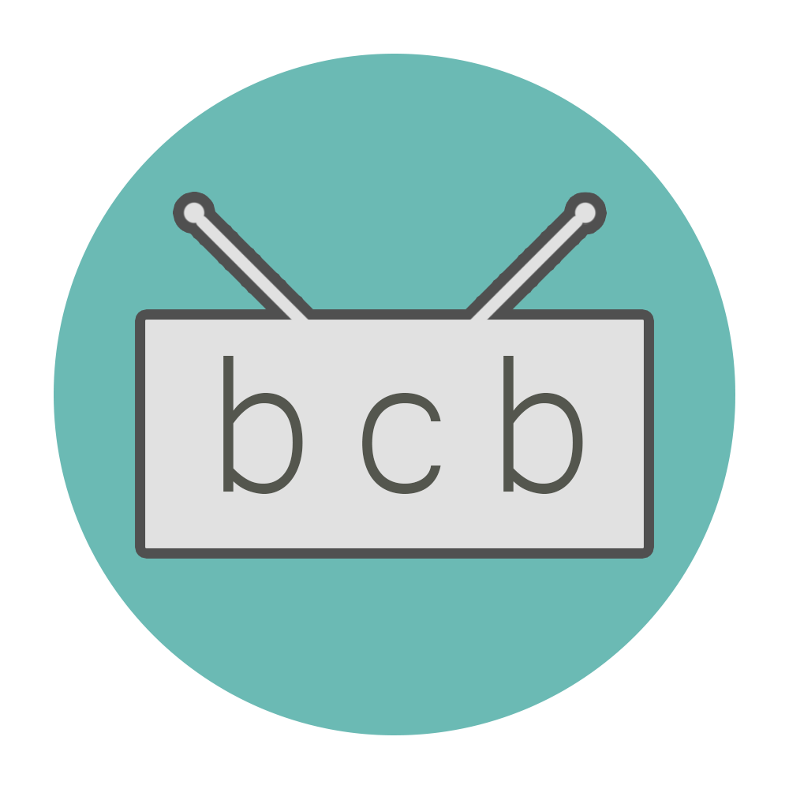As a part of my software development class during my sophomore year, I and a team of 4 other students developed an application which serves as a hub for cryptocurrency related information. A feature of this project is that it recommends terrible cryptocurrencies to purchase on purpose, using a machine learning model that I developed. To build this application, we used a simple HTML/CSS frontend with a Django and PostgreSQL backend.

 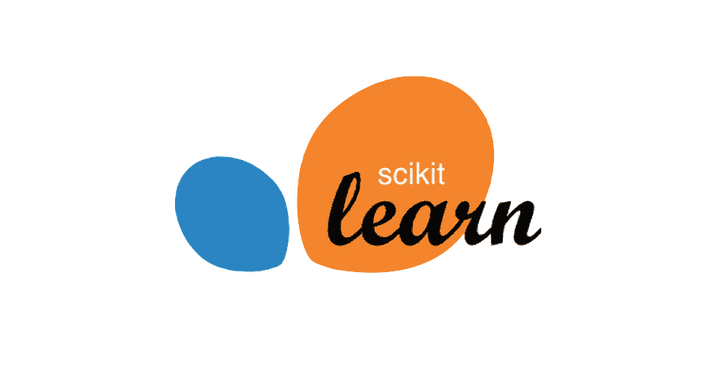
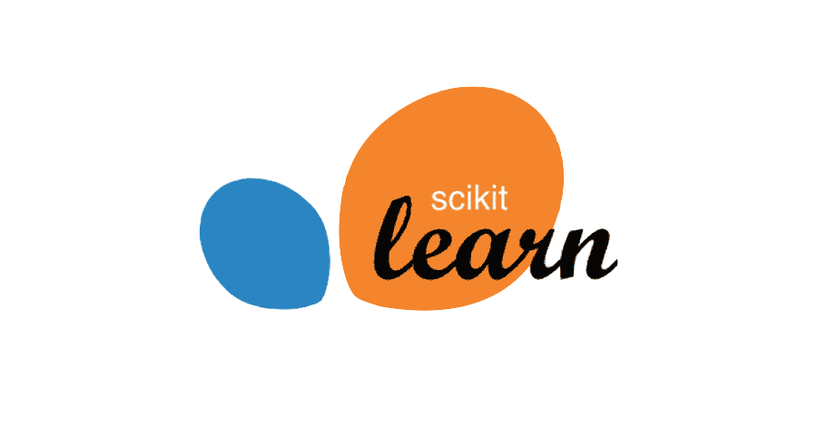

Technologies used: HTML, CSS, JavaScript, Django, PostgreSQL, scikit-learn, Matplotlib, pandas, NumPy
Accessible Adventures Application
My proudest independent project, Accessible Adventures is a portal which allows you to easily find mini adventures near you. Using the google maps API and an easy to use frontend, the user can find things to do near them like restaurants, movie theaters, events, and more. The application also features an entire login system, allowing the user to save adventures to their To-Do list.

 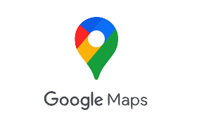
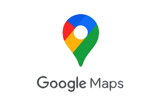
Technologies used: HTML, CSS, JavaScript, PHP, SQLite, Google Maps API
Dream Informatics
My second big project with the TMI Lab was studying the field of dream informatics. As a part of this project, I got to learn about data analysis and research paper writing. Our paper discovered the recommended features for a dream tracking application and the many systems involved in facilitating the process of dream tracking. To finish this project, we submitted a full paper to CHI 2023 which should be uploaded on this website sometime soon!
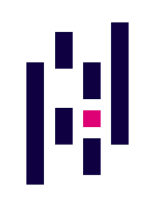
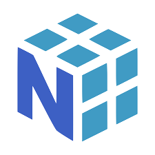

Technologies used: Python, pandas, NumPy, Seaborn, Matplotlib